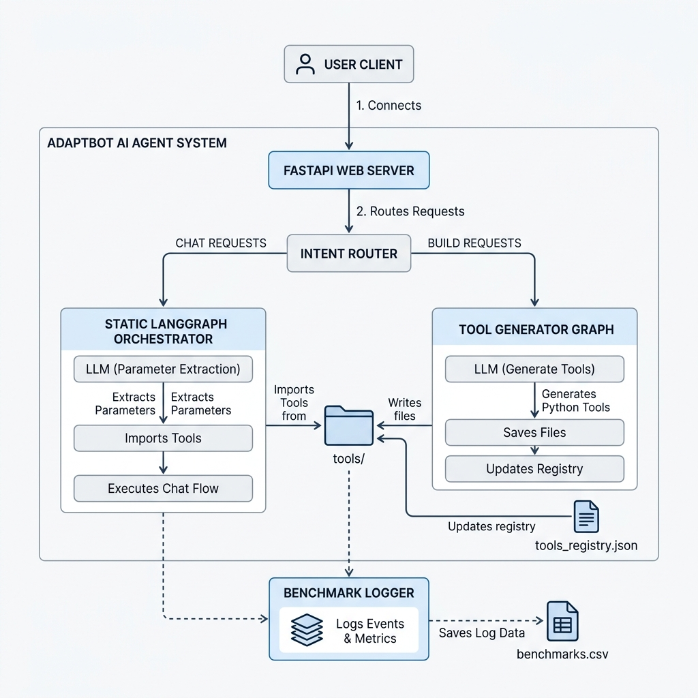

AdaptBot - Dynamic LLM Agent Orchestration
Problem
Traditional AI agent systems are rigid. When a system needs to adapt to new internal APIs or user-defined actions, the agent typically requires its execution graph to be rewired and recompiled. This introduces downtime and restricts the agent's ability to autonomously evolve its capabilities in a production environment.
Architecture Diagram

Workflow
AdaptBot keeps the orchestration layer fixed while allowing its capabilities to evolve dynamically:
- Intent Classification: Separates incoming requests into
BUILD(tool generation/management) orCHAT(general assistant or tool execution). - Tool Management: New tools are generated as standalone Python modules by an LLM based on user requests.
- Dynamic Loading: Tools are registered automatically in a JSON file and loaded at runtime via on-demand Python imports, requiring zero server restarts.
- Execution: The static LangGraph pulls from the dynamic registry to fulfill the user's task.
Tech Stack
Challenges
The primary challenge was ensuring the safe and reliable execution of LLM-generated code at runtime. Loading arbitrary Python modules dynamically presented risks of syntax errors crashing the graph or infinite loops. Additionally, ensuring the agent correctly extracted structured parameters from vague user histories to feed into newly created tools required robust schema validation.
Trade-offs
To achieve zero-downtime extensibility, we traded absolute static type safety for runtime module loading. We also opted to rely on a JSON-based local registry instead of a full database for tool indexing, which prioritizes speed and simplicity over distributed horizontal scalability in this iteration.
Benchmarks
93.2%
Intent Classification Accuracy
vs GPT-OSS-120B
100%
Tool Execution Success
With 50+ runtime-generated tools
| Operation | Success / Total | Success Rate | Avg. Latency |
|---|---|---|---|
| Intent Classification | 41 / 44 | 93.2% | ~2.5s |
| Tool Creation | 9 / 11 | 81.8% | ~6.0s |
| Tool Modification | 4 / 5 | 80.0% | ~7.9s |
| Tool Deletion | 4 / 4 | 100.0% | ~2.5s |
| Parameter Extraction | 5 / 5 | 100.0% | ~8.8s (incl. execution) |
| Tool Execution | 5 / 5 | 100.0% | ~8.8s |
Local benchmark summary calculated from benchmarks.csv. Latency calculations exclude network error states (temporary 401/400 API limits or invalid responses).
GitHub Repository
The complete source code, evaluation scripts, and deployment instructions are available on GitHub.
sowndappan5/AdaptBot